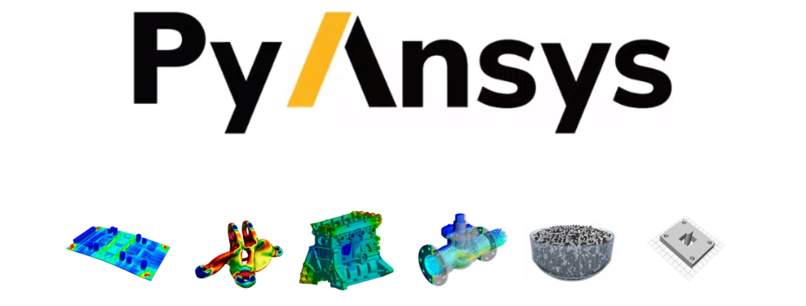
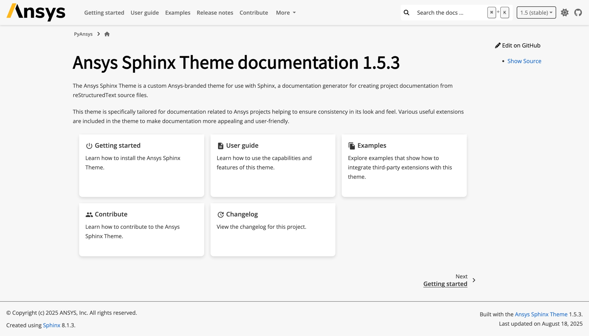
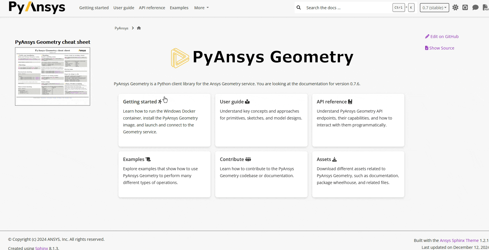
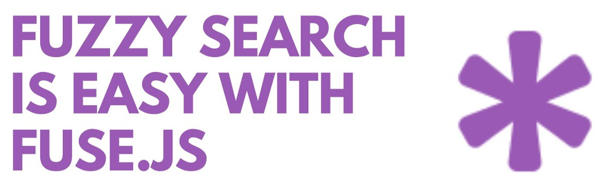
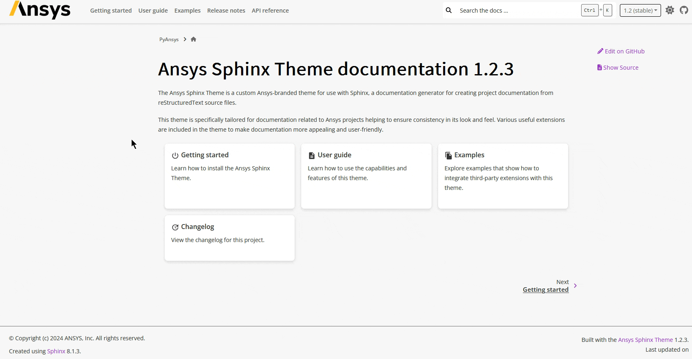
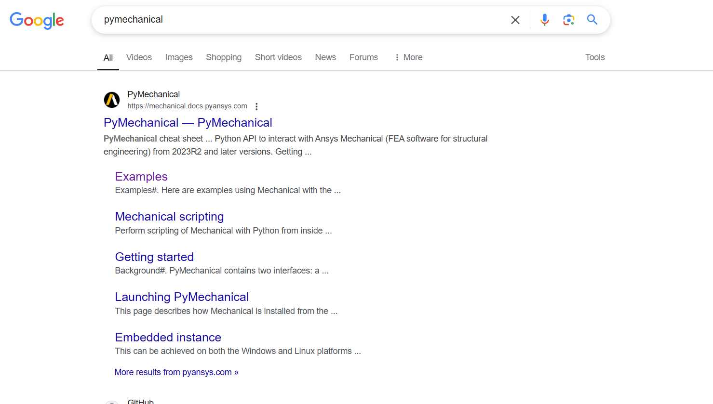
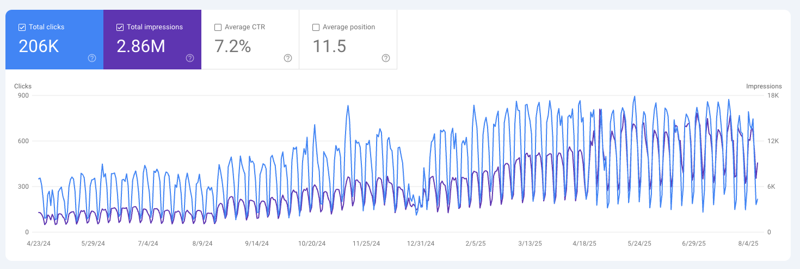

flowchart LR A[Write docstrings] --> B[Parse documentation] --> C[Hydrate templates] --> D[Render docs] %% Styling: white nodes, black border & text classDef white fill:#ffffff,stroke:#000000,color:#000000; class A,B,C,D white;
Industrial-Level Documentation for Scientific Projects
Optimizing Documentation Workflows with Ansys Sphinx Theme
Revathy Venugopal – Ansys R&D | Open-Source Contributor
2025-08-20
Who am I?
- Name: Revathy Venugopal
- GitHub: @Revathyvenugopal162
- Position: Research and Development Engineer II
- Company: ANSYS, Inc.
What is PyAnsys?
PyAnsys is an ecosystem of Python libraries that provide access to Ansys simulation capabilities.
Documentation challenges
The main challenges we face in PyAnsys documentation are:
- Ensure a unified user experience across multiple libraries
- Massive APIs that update faster than docs
- Users and developers lose hours digging through docs
- Manual maintenance of changelogs and API docs
- Poor discoverability and search experience
Unifying the user experience
API documentation: the problem
How can we ensure that our API documentation is always up-to-date, easy to navigate, and visually appealing?
- Manually syncing with source code is error-prone
- Large APIs can lead to overwhelming documentation
- Users struggle to find relevant information quickly
- Diffs can be difficult to track
- Link documentation to source code for quick-reference
API documentation: the solution
Automate the process of generating API documentation and present it in a single-page per object format:
- Docstrings are the source of truth
- Documentation pages are auto-generated by parsing source code
- Jinja is used to create templates for API documentation
- API documentation is presented in a user-friendly format
API documentation: the result
Search experience: the problem
The default search in Sphinx is slow, not user-friendly, and lacks real-time preview.

Search experience: the solution
Take advantage of the PyData Sphinx Theme architecture to override the search bar component.
- Parse the documentation to extract chapters and sections
- Generate a JSON index of all documentation content
- Use Fuse.js for fast client-side search
- Replace default Sphinx search with a custom search component

Search experience: the result
Changelog: the problem
Generating changelog and release notes has the following challenges:
- Manually maintaining changelogs is error-prone
- Difficult to keep track of changes across multiple libraries
- Presenting changelogs in a user-friendly format is challenging
Changelog: the solution
Automate the whole process by using Towncrier and linking it with CI/CD pipelines:
- Conventional commits are enforced
- Changelog fragments are generated from pull-request titles
- Fragments retain the pull-request type and number
- Changelog is rendered during a release at CI/CD time
- Fragments get removed in main branch after a release
flowchart LR A[Convential commits] --> B[Fragment generation] --> C[Changelog rendering] --> D[Fragments cleanup] %% Styling: white nodes, black border & text classDef white fill:#ffffff,stroke:#000000,color:#000000; class A,B,C,D white;
Changelog: the result

SEO optimization: the problem
After LLM became popular, main search engines stopped indexing content that looked auto-generated.
- Google stopped indexing our pages
- Multi-version documentation can be challenging to index
- Only the stable documentation should be indexed
SEO optimization: the solution
Take advantage of search engine tools and other tips:
- Use hyphens rather than underscores when naming files
- Ensure short and descriptive URLs
- Automatically generate a
sitemap.xmlfile - Automatically generate a
robots.txtfile - Use tenant accounts to automated indexing of search console panels
SEO optimization: the result
 
Conclusion
Despite facing various challenges, the effort of documenting a big project can be eased by:
- Using centralized themes from which common settings are applied
- Ensuring a single source of truth for content generation
- Automating rendering processes as much as possible
And don´t forget about:
- Evaluate your users experience
- Making your website accessible
- Collect metrics to evaluate performance
Thanks for your time! Questions?
EuroSciPy 2025